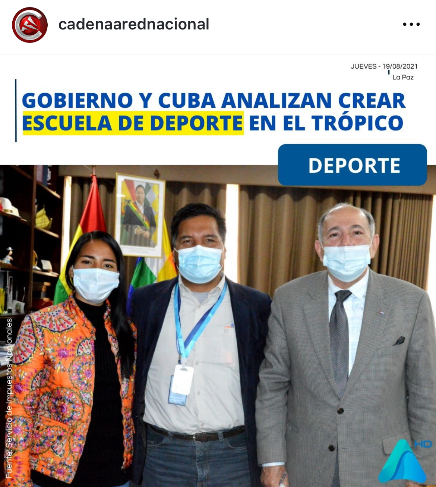
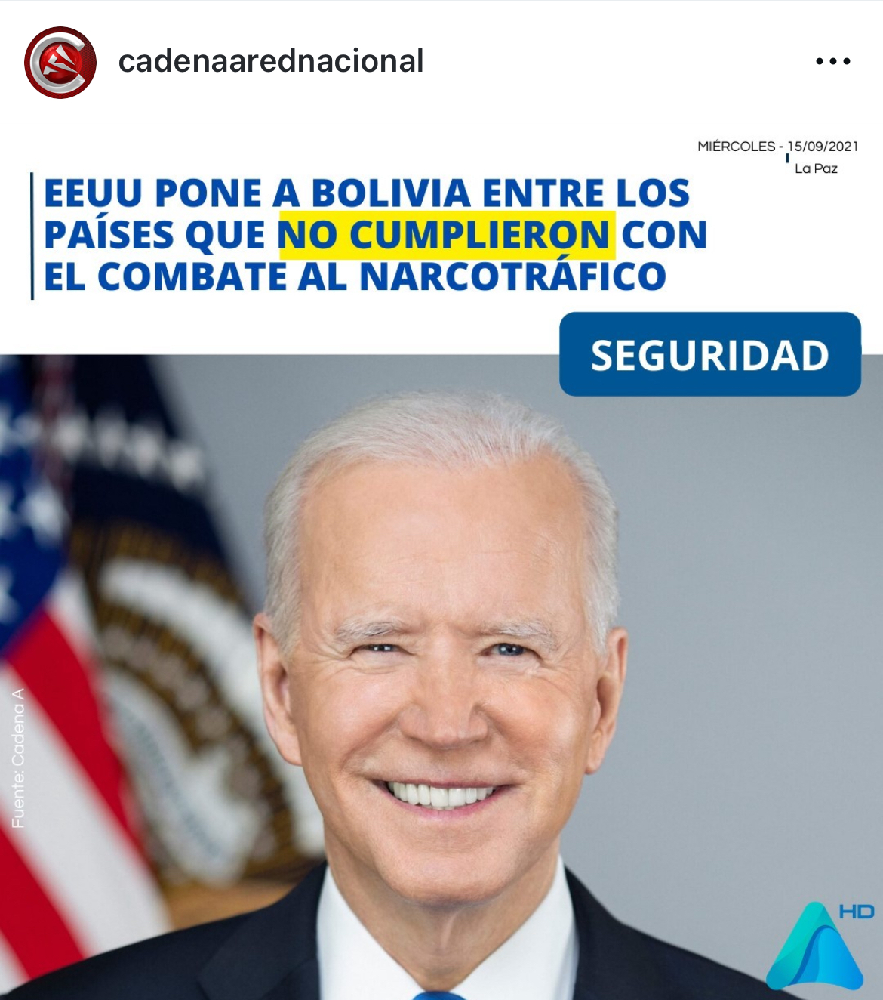

Bolivia's TV news network. I took their social presence from zero to 500,000+ followers in three years — and went from last place among national outlets to #1. Worked production-assistant logistics on set, ran social, created formats, edited 50+ videos a day myself, partnered with the ad team to monetize every clip.
In a country with 5 major networks, we ended at #1.
When I started, Cadena A's social was at the bottom of the Bolivian media landscape. Three years later we were the country's most-followed news outlet — passing Unitel, ATB, RTP, Bolivision, and PAT. The growth wasn't paid. It wasn't lucky. It was 50+ videos a day, edited and copywritten myself, posted on a relentless cadence, every clip wired to monetize alongside the on-air ad team.
Year 1: 80K · Year 2: 320K · Year 3: 500K+
Hover any point — the curve compounds the way organic growth actually does.
No ad spend. No team. Just relentless cadence + format I created.
Posted 50+ videos a day. Wrote every caption. Edited every clip myself. Worked directly with the on-air advertising team so each video carried sponsor inventory in the bottom strip — turning the social feed into a second monetized channel for the network. Engagement reached 2.5%+ peak — every competitor stayed under 1.2%.
Two official titles. Six functional roles.
Behind-the-scenes logistics for live and recorded segments. Call sheets, shot prep, on-set support, equipment runs, talent coordination. The job that lets the on-air talent look effortless.
The TV bezel above shows real footage from the show I helped run.
Owned the network's entire digital presence — IG, Facebook, X, TikTok. Created the original concept for "60 Segundos de Política." Edited 50+ videos a day, wrote every caption, and partnered with the ad team to monetize every clip with sponsor inventory.
From last place to #1 in 3 years. All organic.
Concept by me. Vertical. 60 seconds. Built for the algorithm.
A 60-second vertical-first political news format I created from scratch — political news condensed into a minute, optimized for TikTok, Instagram, Facebook, and X. Real episodes below, framed in iPhones because that's how the audience watched them.
Engagement rate · 6 national outlets · Cadena A on top.
Real screenshots from the run.


Cadena A was one chapter. GIO Sports is the next one.
Contact me → ← Back home